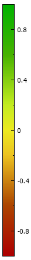

AgView™ Indices
Intro HeadwallMultiSpectral
Overlay indices to Google map
Introduction
Plants grow by absorbing light from the sun and using the energy from the light to drive the process of photosynthesis, where the plant takes carbon dioxide
(CO2) from the atmosphere, and produces carbohydrates which are in turn used to grow the plant.
Different chemical compounds will interact with light differently, absorbing, reflecting or transmitting different wavelengths more or less strongly.
The characteristic pattern of light reflected from a surface is called its Reflectance Spectrum, and many chemicals can be identified by particular features in
their reflectance spectra. A living plant will have a wide variety of chemical compounds in its leaves, from simple compounds like water to complicated pigments
like chlorophyll.
Though the actual reflectance spectra of plants can be quite complex, there are several features that are common, and where the magnitudes of these features (peaks and
valleys in the spectrum) have been correlated with physical properties of plants at various stages in their life cycles. Many of these spectral features have
been characterized by "Spectral Indices", where each index is a numerical value depending on the relative reflectance values at a small number of wavelengths.
The calculation of spectral indices is a method to reduce the complexity of spectral images, thus greatly simplifying the analysis of the data.
AgView™ Indices
The indices computed by AgView™ are:
- Visual Color Image: (RGB)
- Chlorophyll Content: Red Edge Ratio
- Broadband Greenness: Normalized Difference Vegetation Index (NDVI)
- The modified normalized difference 705 index (mND705)
- Light Use Efficiency: Photochemical Reflectance Index (PRI)
- Canopy Water Content: Water Band Index (WBI)
- Leaf Pigment: Chlorophyll (MCARI)
RGB
RedEdge HeadwallMultiSpectral
RedEdgeRatio
The "Red Edge" refers to an abrupt increase in reflectivity in the NIR due to a drop-off in the absorption of Chlorophyll
superimposed on a strong NIR reflectivity due to internal structures in leaves. As such, it can serve as a
quantitative measure of total chlorophyll in a leaf.
The $Red\ Edge\ Ratio$, or "simple ratio", is a ratio of the reflectivity on the NIR side of the red edge to that on the red side of the red edge.
In AgView™, the $Red\ Edge\ Ratio$ is calculated by:
$$
RedEdge = \frac{NIR5}{Red3}
$$
Where $NIR5$ is the reflectance at 700 nm, and $Red3$ is the reflectance at 670 nm.
The $Red\ Edge\ Ratio$ is a measure of the relative chlorophyll content of a leaf, and is therefore a general measure of leaf health.
NDVI HeadwallMultiSpectral
Normalized Difference Vegetation Index
The normalized difference vegetation index (NDVI) is a scaled measure of the Red Edge. It is a "normalized" difference between a
red wavelength (on the short wavelength side of the red edge, where chlorophyll absorbs very strongly), and a near infrared wavelength (
on the long wavelength side of the red edge), where the chlorophyll absorption is weak, and scattering by internal leaf structures
dominates the reflectivity.
Rationale
Plants use light from the sun for photosynthesis of sugars from atmospheric CO2. Photons in the visible region of the spectrum have
energies sufficient to drive the photosynthesis process, and therefore plant chlorophyll absorbs strongly in the visible region. Photons in the near
infrared (NIR) do not have enough energy to drive photosynthesis, so these wavelengths tend to be reflected by plant leaves. NDVI is a measure of the
difference in reflectance between the visible and NIR reflectances of a surface. For better comparisons across various measurements and conditions, this
difference is "normalized" by dividing by the sum of the two reflectances.
In AgView™, NDVI is calculated from the reflectance values by:
$$
NDVI = \frac{(NIR1-Red1)}{(NIR1+Red1)}
$$
where $Red1$ and $NIR1$ stand for the reflectance values in the visible (red, 680nm) and near-infrared (800nm) regions, respectively.
Values of NDVI can range from -1 to 1. Water is typically near -1 and healthy vegetation may have NDVI values from 0.2 to 0.8.
For many crop types, empirical relationships have been found between NDVI and the Leaf Area Index (LAI).
 
mND705 HeadwallMultiSpectral
mND705
The modified normalized difference 705 index(mND705) is a narrow-band index developed for accurate measurements of the red edge.
$$
mND705 = \frac{(NIR7-NIR6)}{NIR7+NIR6 - 2\times Blue1 }
$$
where $NIR7$ is the reflectance in the near infrared at 750 nm, $NIR6$ is the reflectance in the near infrared at 705 nm, and $Blue1$ is the reflectance in the blue at 445nm.
NDVI and mND705 are complementary indices. While NDVI is a broad band index, mND705 is a narrow band index. In addition, the mND705 index is less sensitive to differences in leaf surfaces across species. By subtracting the reflectance at 445 nm (where most leaf pigments absorb strongly) from the values on either side of the red edge, the index corrects for specular reflection from shiny leaf surfaces.
PRI HeadwallMultiSpectral
Photochemical Reflectance Index
The Photochemical Reflectance Index, or Physiological Reflectance Index, ($PRI$) can be used to
measure the efficiency of photosynthesis, or light use efficiency for a plant in real time.
The $PRI$ value is inversely proportional to instantaneous photosynthesis activity.
Plants must expend energy and nutrients to generate the structures involved in photosynthesis.
Thus there will be a limit to the amount of light that a given plant can use in the photosynthesis
process. Damage to the chlorophyll can occur if light is absorbed more quickly than the energy
can be used. The energy from excess absorbed light is dissipated through changes in the Xanthophyll
pigments, which are associated with an increase in reflectivity in the green around 531 nm.
If the reflectivity in this region increases, it is an indication that the plant is becoming less
efficient at using the incoming light.
$PRI$ is a normalized difference index calculated in a manner similar to $NDVI$. For $PRI$, the normalized
difference is calculated between reflectance in the $Green$ (531nm) and $Yellow$ (570nm)
$$
PRI = \frac{(Green-Yellow)}{(Green+Yellow)}
$$
As with any normalized difference index, the values range from -1 to 1.
WBI HeadwallMultiSpectral
Water Band Index
The water molecule has a strong absorption feature (band) in the NIR at 970 nm. The higher the water content in plant tissues,
the stronger the absorption at this wavelength will be. By taking the ratio of the reflectance at this water band with the
reflectance at a nearby wavelength outside the band (900 nm), a quantititative measure of the water content is obtained.
The Water Band Index (WBI) is a simple ratio of reflectance measurements, calculated in AgView™ with:
$$
WBI = \frac{NIR3}{NIR4}
$$
Where $NIR3$ is the reflectance at 900 nm, and $NIR4$ is the reflectance at 970 nm.
(* Note that some publications will define a $WBI$ that is the reciprocal of this value.)
As calculated in AgView™, a higher $WBI$ indicates a higher water content in the plant being imaged. $WBI$ values can be used
to analyze water stress and to predict fire danger, among other uses.
Chl HeadwallMultiSpectral
Chlorophyll (Chl)
Chlorophyll is the green pigment responsible for absorption of light that drives the process of photosynthesis.
Chlorophyll absorbs strongly in the blue and red regions of the visible spectrum, but reflects green light, which
is why plants appear green. Chlorophyll does not absorb much in the NIR, leading to the "Red Edge"
in the reflectance spectrum of plants.
In AgView™ Chlorophyll is measured with the Modified Chlorphyll Absorption in Reflectance Index ($MCARI$):
$$
MCARI = (NIR5-Red3)-0.23\times(NIR5-Yellow1)\times\frac{NIR5}{Red3}
$$
Where $NIR5$ is the reflectance at 700 nm, $Red3$ is the reflectance at 670 nm, and $Yellow1$ is the reflectance at 550 nm
The majority of Nitrogen in plant leaves is contained in chlorophyll molecules, so the nitrogen and chlorophyll content of a
leaf are closely related. In conjunction with measurements from the other indices produced by AgView™, the MCARI index
can inform decisions about amounts of nitrogen fertilizer to be applied to crops.
Overlay indices to Google map
| 


{kind=link}